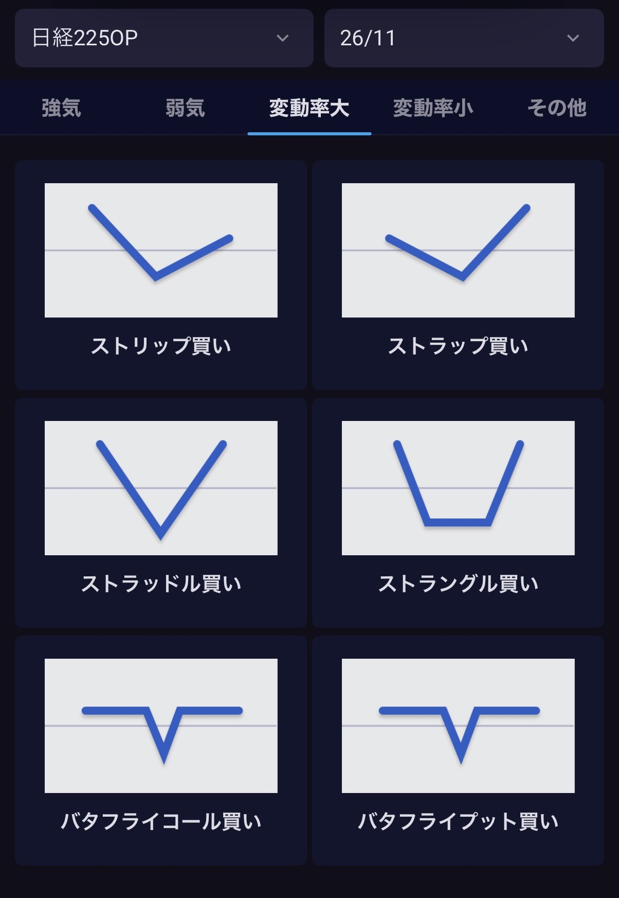
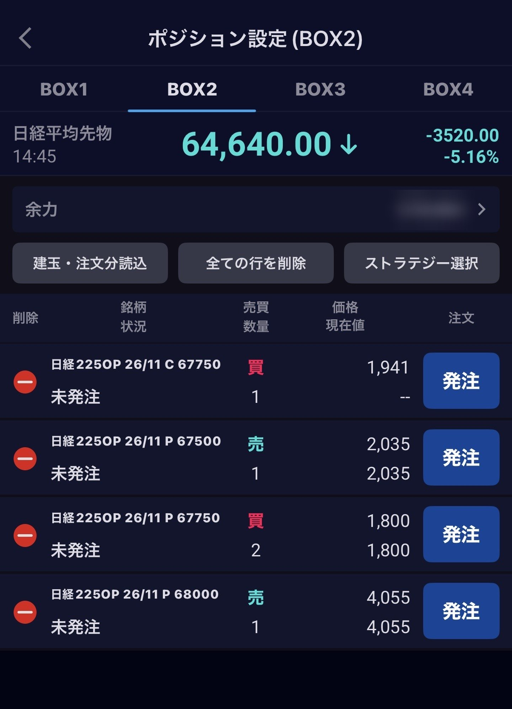
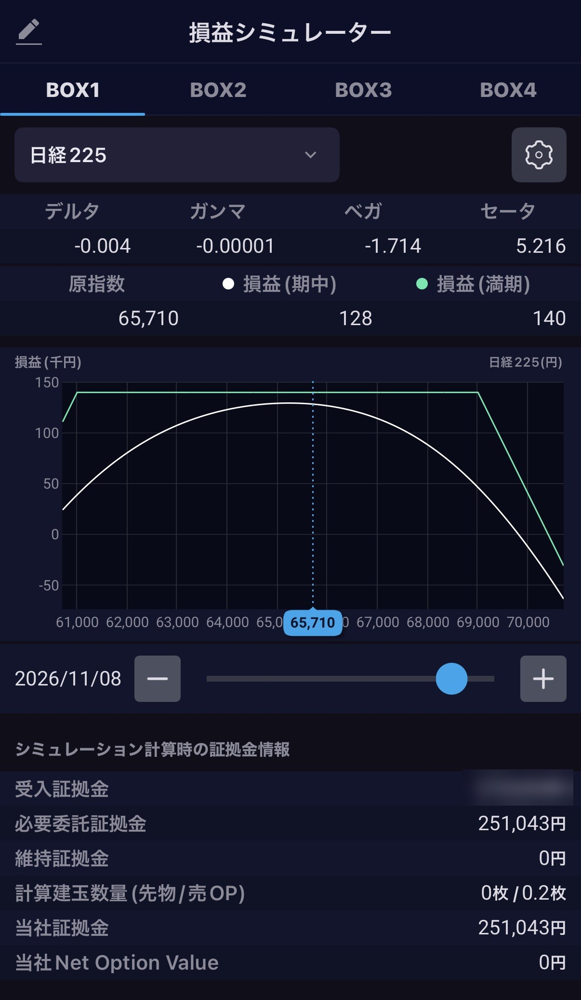

← 夏期集中講座の一覧へ
§1 マクロ
フランスの高校生の抗議とフランス国債の売り（2026年9〜10月）
宿題
提出は次回講義日の 12:00 まで、HTMLで
為替ヘッジをかけてフランス10年債を買う日本の投資家の利回りは、日本10年債より何ポイント上か。数字と1行の結論で。
着地点下の式「ヘッジ後の利回り」。短期金利はECBの預金金利と日銀の政策金利。率を出したら、どの日の値かを書く。
実物：フランス10年債の利回りと、日本勢
フランス10年債（10/12）
4.86％
10/1 に日中で約4.99％。2002年以来の高さ報道
ドイツ10年債との差（10/12）
約1.4ポイント
10/5 前後に約1.5ポイント。2011〜12年以来の広さ報道
日本勢の保有（7月）
約23兆円
日本の外国債券保有の6.6％。Bloomberg の推計推計
- 2026/8/24フランス10年債 4.13％。2008年以来の高さ報道
- 9/10ECB が預金金利を2.50％へ引き上げ報道
- 9/18日銀が政策金利を1.25％程度へ。ドイツとの差は約1.0ポイント報道
- 9/29政府債務 GDP比119.0％（2026年6月末）。1946年以来の高さ一次
- 10/12027年予算案。赤字 GDP比5.4％（2026年見込み）→5.0％。同じ日に10年債が日中で約4.99％報道
- 10/2三井住友DSアセットマネジメントの債券ファンド1本がフランス国債を全売却。ドイツ国債と日本の短期国債へ。金額は非公表報道
- 10/9フランス10年債がイタリア10年債を約0.3ポイント上回る。ユーロ導入以来で最大報道
- 10/23ムーディーズの格付け見直し予定（現在 Aa3）。S&P は11/27（現在 A+）報道
売る側の材料
財政 債務 GDP比119.0％（6月末）、赤字5.4％（2026年見込み）
政治 予算案に不信任の動き。大統領選は2027年4〜5月
日本の金利 日本10年債が3％台。ヘッジ後の上乗せは約0.4ポイントまで縮小報道
買う側の材料
水準 4.8％台。イタリアより高い
需要 10/1 の長期債入札は約120億ユーロ、応札は約2倍報道
日本勢の流れ 6〜8月は約46億ユーロの買い越し、9月に売り（モルガン・スタンレーの集計として報道）。アモーヴァ（旧日興）AMは買い増しに前向き報道
ヘッジ後の利回り ≒ 外国債の利回り − （外国の短期金利 − 日本の短期金利）
かっこの中がヘッジのコスト。ユーロ円なら ECB 預金金利2.50％、日銀1.25％。実際のコストは為替の先渡しの値段で決まり、この式は概算。
数字の出どころ 利回りは報道ベース（Bloomberg・ideal-investisseur・Trading Economics）。ドイツとの差の頂点は報道で約1.47〜1.52ポイントと幅がある。日本勢の保有23兆円は Bloomberg の推計で、財務省の公表値ではない（財務省の週次統計には国別の内訳がない）。債務比率は INSEE（一次情報）。
原文：パリの校門と金利
原文は提供された文章をそのまま掲載。ファクトと違う点・確認できなかった点は欄外（右、狭い画面では段落の下）に明記。照合は2026年10月14日時点で、仏語の報道本文は開けていない。検索結果の要約による判定。
相違出典と違う（5）
小差丸め・言い換えの範囲（4）
未確認出典が見つからない（2）
補足誤りではないが読み方に効く（5）
評価照合の対象外（2）
原文
先週10月2日、フランス全土で四百あまりの高校で、大規模な抗議デモが発生しました。パリ、マルセイユ、ストラスブール、レンヌと、全仏各地で機動隊と高校生が衝突。ダルマナン法相はラジオで、デモ開始からの逮捕者が約二千人、その大半が十代だと明かしています。
校長四十人を含む六十五人の教職員も負傷。北部ランスで十五歳の少年が警察の閃光弾に関わる事故で片手を失い、パリ警視総監は「運動はもはや制御不能だ」と発言しました。
小差四百あまり 10/2 は約400校が閉鎖、約560校で抗議・混乱（全国の高校は約3,700校）。
補足4都市 4都市の並びは AFP の10/1付の記事。マルセイユの衝突は10/1。リール・ボルドー・リヨンでも衝突。
相違約二千人 ダルマナン法相（RTL、10/2）の約2,000人は警察での身柄拘束（garde à vue）の数で、9割が未成年。逮捕（interpellation）は内務省集計で5,000人超（約85％が未成年）。校長40人を含む65人の負傷は一致（ジェフレ教育相）。
相違手を失った少年 町はランス（Reims）ではなく Lens（パ＝ド＝カレー県）、日付は10/5。器具はスタングレネード。拾ったのか投げつけられたのかは不明で、警察監察（IGPN）が調査中。「事故」とは確定していない。10/7 に内務相が高校の抗議でのスタングレネード使用を停止。
小差警視総監 X の公開書簡（10/3ごろ）。趣旨は「始めた者たちは、もう運動を制御していない」。
火種は、9月下旬のパリ近郊ではじまりました。オーベルヴィリエやサン＝ドニの高校生がゴミ箱に火をつけて校門を封鎖し、それが一週間でSNSを通じて全国に飛び火。つまり、文字通りの「炎上」です。
今回、高校生たちの要求を聞くと驚くほど地味な内容で、休んだ教師の代わりに来る代替教員を雇ってほしい、すし詰めの教室をなんとかしてほしい、崩れかけた校舎を直してほしい、朝八時から夕方まで続く時間割を見直してほしい、大学進学の出願・選考システム「パルクールシュプ」を透明化してほしい、そして暑すぎる教室をなんとかしてほしい、などです。
つまりこの子たちは、気候が変わったことと、国家に金がないこと、社会システムが不透明なことを、年々暑くなる教室の温度計から学びました。
相違始まった場所 報道で最初とされるのはクレテイユの高校（9/18ごろ）。サン＝ドニは激化した場所の一つ。オーベルヴィリエは2026年の記事で確認できない。
未確認SNSで飛び火 TikTok・Snapchat による拡散はブログの記述のみ。要求の6項目は一致。政府は代替教員3,000人の緊急配置を発表。
ルコルニュ首相は10月1日、閣僚の出張を取り消して危機会議を招集。政府は背後で左派政党「不服従のフランス」が煽っていると非難していますが、党首メランションは、「政府は若者を獰猛に、しかも紛れもなく人種差別的に弾圧している」と応酬しました。法的に来年五月の大統領選でマクロンは三選できませんので、この一週間の応酬は、すでに選挙の前哨戦となりました。
相違メランションの言葉 確認できる言い方は、弾圧に「明らかな人種差別の後味（arrière-goût raciste évident）」（9/28ごろ）。「獰猛に」は出典が見つからない。首相の危機会議（10/1）と、政府による不服従のフランスへの非難は一致。
小差大統領選 第1回投票は2027年4月18日、決選投票は5月2日。連続3選の禁止は憲法6条。
社会学者ピエール・ブルデューが『再生産』で、学校は階級を溶かすのではなく再生産する装置だと喝破したのは1970年のことでした。それでも半世紀のあいだ、このエスカレーターは遅いなりに動いてきました。環境や資金的に恵まれない郊外の子どもも、グランゼコール（少人数制のエリート養成を行う高等教育機関の総称）に辿り着く例外的な数人の物語を信じて、朝八時の教室に座って学び続けていました。
しかし、今回の反乱は、事実上「あたらしい階級」が固定され、蜘蛛の糸同然だった細いエスカレーターが止まったことを、乗っている本人たちが知ってしまった、という事実です。つまり、これは暴動ではなく、むしろ、ある認識の到達だとも解釈できます。
一致『再生産』 ブルデューとパスロンの共著、1970年（ミニュイ社）。
かつての階級は職業で決まりました。工場を持つか、工場で働くか。一方、いまの階級は「位置」で決まります。動ける者と動けない者。資産を持つ者と、給料しか持たない者。AIを使う側に立つ者と、AIに置き換えられる側に立つ者。フランスの政治家で思想家ジャック・アタリが二十年前に予言したハイパーノマドと定住民の分岐が、所得の格差ではなく、人生の設計図の格差として明確に現れている。
今週のフランスが示しているのは、その次の段階で、すでに固定されつつある、ということなのです。
補足アタリ 『未来の歴史（Une brève histoire de l'avenir）』2006年。分類は3つ（ハイパーノマド・インフラノマド・定住民）で、原文の二分は簡略化。
社会階層の形成と固定の違いは、下にいる人間がそれを知っているかどうかです。形成の段階では、まだ誰もが上に行けると信じている。固定の段階では、下の子どもたちが「自分は下だ」と自覚し、上の子どもたちが「自分は上だ」と安心する。
固定を知らせる装置は、昔なら制服や方言でしたが、いまはスマートフォンです。暑い教室の生徒は、涼しい教室がどこかにあることを知っている。そして、固定の執行官は、警察でも政治家でもなく、意外かもしれませんが、実は金利にあります。
評価書き手の見立て。この資料では問2で数字に置き換える。
ここで世界の数字を重ねてみましょう。米国の十年債利回りは五パーセント台と数十年ぶりの高さで、世界の債券は五週間売られ続けています。ホルムズ海峡の封鎖が解けないまま原油は百ドル近辺に張りつき、先週末にはフーシ派がリヤドとクライスのアラムコ施設を弾道ミサイルとドローンで攻撃しました。
フランスの高校生の不満に、空調等の「燃料価格」が混じっているのは偶然ではありません。金利が上がれば、国家は利払いに追われ、その分、削れるものから削られる。年金は削れません。なぜなら年金受給者は投票するからで、削られるのは、投票できない十六歳の教室の予算なのです。
一致米10年債 10/1 に約5.34％で2002年以来。10/13 は約5.22％。
未確認「五週間」 日付のない市場コメントにしか見当たらない。
小差原油 ブレントは10/8・10/13 とも約105ドル。「百ドル超」が近い。ホルムズ海峡の通航は10/4に4隻（危機前は1日約85隻）。
補足フーシ派の攻撃 10/3〜4 の攻撃はフーシ派の主張。サウジ側は被害を確認していない。
評価教室の予算 見立て。数字は、2026年予算で教員ポスト約4,000の削減（2月成立）、2027年政府案で純減1,588（在籍生徒は約18万人減の見込み）。教育省の予算総額は政府案で増額。
そして、この炎上はフランスだけのものではありません。去年の「すべてを封鎖せよ」のデモで、パリの群衆の上に『ワンピース』の麦わらの海賊旗は、ネパール、インドネシア、フィリピン、マダガスカルのZ世代の抗議から伝搬してきたものでした。
ネパールでは首相が辞任に追い込まれ、マダガスカルでは大統領が国を追われました。夏には本欄でインドの「ゴキブリ人民党」の躍進をお伝えしました。エスカレーターが止まった社会で最初に声を上げるのは、いつの時代も、乗ったばかりの若者たちです。
相違マダガスカル 抗議の開始は2025年9/25で、「すべてを封鎖せよ」（9/10）より後。旗の伝搬元には入らない。インドネシア（8月）・ネパール（9/9）・フィリピンは一致。
補足マダガスカルの大統領 2025年10/12ごろ国外へ。辞任はしていない。ネパールのオリ首相の辞任（2025年9月）は一致。
補足ゴキブリ人民党 英語名は Cockroach Janta Party。政党登録はない運動。6月にデリーで抗議。
今週、パリの校門で燃えているゴミ箱は、三十年間ゼロ金利で先送りしてきたツケが、実質的に関係ない次の世代にまわされた合図なのでしょうか？
それとも、そのツケは、国境を選ばず、これから世界中に届いていくのでしょうか？
照合できた項目と出典
一次公的機関の公表 報道報道機関 解説百科・分析。仏語の報道本文は開けておらず、検索結果の要約で照合した。
- フランス10年債の利回りは、8/24 の4.13％から10/1 に約4.99％へ上がった。この間、すでに持っていた人の国債の値段は上がったか、下がったか。
着地点第7回 §0。分子（約束された元利金）は固定、動くのは分母。利回りが上がった＝値段が下がった。
- 原文の「固定の執行官は金利」。金利が上がると、国の予算のどの行が増え、どの行が削られるか。フランスの2027年予算案の数字を1つ当てる。
着地点第7回 §1（米国の利払い1.0兆ドル）と同じ型。欄外の教員ポスト純減1,588は政府案。見立てと数字を分けて言う。
- 三井住友DSのファンドは、フランス国債を売ってドイツ国債と日本の短期国債へ移した。日本の投資家がユーロ建ての国債を売って円に戻すと、為替はどちらに動きやすいか。
着地点第7回の4つの値段の輪。ヘッジをかけて持っていた分は、売っても為替の取引がほぼ相殺される。ヘッジの有無で答えが変わる。
数字の出どころ 抗議の数字は仏政府の発表を報じたもの。拘束と逮捕は数え方が違う。国債の利回り・差は報道ベース、債務比率と非居住者保有は一次情報（INSEE・フランス銀行）。格付けの見直し日程は報道ベース。
§2 マクロ
IMF・世界銀行年次総会（バンコク、2026年10月）と日本のGDP順位
実物：IMF の名目GDP見通し（2026年10月版）
日本（2027年見通し）
4兆4,676億ドル
6位。2026年は4兆3,419億ドルで4位報道
インド（2027年見通し）
4兆5,211億ドル
米・中・独に次ぐ4位報道
英国（2027年見通し）
4兆4,889億ドル
5位。4月版では日本を抜くのは2029年報道
数字はドル建ての名目GDP（IMF 世界経済見通し 2026年10月版を報じた日経・NHK）。下の原文は提供された文章をそのまま掲載。ファクトと違う点・確認できなかった点は欄外に明記。照合は2026年10月17日時点で、IMF の演説記録とデータベースはこの環境では開けていない。
小差言い回し・条件の違い（3）
未確認出典で確かめられない（4）
補足誤りではないが読み方に効く（4）
評価照合の対象外（3）
原文
今週10月12日、バンコクのクイーン・シリキット国立コンベンションセンターでIMFと世界銀行の年次総会が開催され、191の国と地域から1万5,000人を超える中央銀行総裁、財務大臣、エコノミスト、銀行家、そして記者が集まりました。通常この総会は、ワシントンで2年続けて開かれ、3年目に加盟国へ出張する決まりです。今回のタイでの開催は1991年以来、実に35年ぶりになります。
補足191 IMF の加盟国数。会期は10/12〜10/18。会場・約1万5,000人・ワシントン2年と加盟国1年の順番・1991年以来は一致。
開幕に先立つ10月7日、IMFのゲオルギエバ専務理事はシンガポールで恒例の「カーテンレイザー」演説を行い、常夏の国々に向けて「冬が来る」と告げました。
補足「冬が来る」 『ゲーム・オブ・スローンズ』の引用。北半球の冬に暖房の需要が増え、エネルギー価格がさらに上がりうる、という文脈。会場はリー・クアンユー公共政策大学院。
彼女が挙げたのは三つの寒波です。第一に、8カ月目に入った湾岸の戦争と5年目のウクライナ戦争がもたらす、高止まりするエネルギー価格。第二に、AI。第三に、過去最高の公的債務と、膨らみ続ける利払いです。
世界経済はいま、中東発の負の供給ショックとAI発の正の需要ショックに、正反対の方向へ引き裂かれていて、そしてその影響は「極めて不均一」かつ、AIブームは多くの国を素通りしている、と彼女は語りました。
補足「三つの寒波」「8カ月目」「5年目」 本人の言葉ではなく書き手の整理。挙げたリスク（エネルギー・AI・債務）は一致。報道の呼び方は「イラン戦争」（2026年2/28開戦）。「極めて不均一」（highly uneven）は一致。
AI投資の対GDP比は、鉄道、電力網、電話網を建設した時代の水準に並び、やがてそれを超えるのは、間違いありません。AI関連のハードウェアはすでに世界のモノの貿易の1割以上を占め、なお増え続けています。
もしAIがうまく使われれば世界の成長率を年0.5ポイント押し上げ、それはASEANひとつ分の経済を世界に加えるのに等しくなると予測されますが、結果はいまだ見えません。
一方で、世界の公的債務は第二次大戦直後以来の水準に近づき、2030年を待たずに世界GDPの100％を超える見通しです。
世界の成長率が3％前後で踏みとどまっているのは、ひとえにAI投資が「ギアを上げた」からであり、エネルギー価格が足を引っ張るなかでそれを支えているのは、ハードウェアを供給するタイを含むアジアだ、と述べています。
つまり、世界経済はいま、データセンターの建設ラッシュという一本足で、かろうじて立っているのです。
小差鉄道・電力網・電話網 本人は「並び、おそらく上回る」（will reach and likely exceed）。見通しで、断定ではない。モノの貿易の1割超は一致（IMF の推計）。
小差0.5ポイント・ASEAN 「最大で年0.5ポイント」。成長率を3％から3.5％にすると「10年でASEAN一つ分」を加える、という言い方。
未確認「ギアを上げた」 この言い回しは報道で見つからない。成長3％前後をAI投資が支える、という発言は10/12 のバンコク（10/7 の演説ではない）。公的債務の見通しは一致。
評価「一本足」 書き手の見立て。
しかし、本当に驚いたのは、開幕を飾った世銀主催のセッションで、IMFの専務理事ゲオルギエバが、AIを「ゆっくり進む津波」と呼んだことです。やがて世界の仕事の約4割、先進国では約6割、低所得国でも約23％が影響を受け、そして最初に飲み込まれるのは、これから労働市場に入ってくる若者だ、と明確に話しました。
補足約23％ 報道ベース。2024年1月の IMF の分析では低所得国は約26％。世銀のパネル（10/12）、「slow moving tsunami」、約4割・約6割、若者が先、は一致。津波の比喩は2024年5月から使っている。
彼女の言葉をなぞらえば、若者はふつう定型的で反復的な仕事から入り、そこから階段を上がっていきます。しかし、その仕事が消えたら、どうやって上がるのでしょうか。「コーヒーショップの店員を職業的な未来だと思う若者はいない」。IMFのトップが、入り口の仕事がなくなる世界を、公の場でこう描写したのです。
小差本人の言葉 "I don't think any young person wants to be a barista in a coffee shop as their professional future."（コーヒーショップのバリスタを将来の職業にしたい若者はいないと思う）。
さらに彼女は、AIが所得を労働者から資本の所有者へ移すなら、政府は最も頼りにしている税基盤を失う、と付け加えました。AIによる「労働から資本への所得移転」を、議論の余地のある仮説ではなく既定の前提として語りました。
また、ゲオルギエバは演説で、「必要な政策行動をこれ以上先延ばしにはできない」と言い、各国政府は成長で債務を薄めることを当てにせず、「非常に厳しい政治的選択」を覚悟せよ、と迫りました。
一致税基盤の発言（"erode the tax base"）、「先延ばしにはできない」「非常に厳しい政治的選択」。
評価「既定の前提」 書き手の読み。本人の言い方は「〜しうる（could）」。
では、急変する世界のなかで、日本はどの位置にいるのでしょうか。日本の名目GDPは来年2027年、インドと英国の両方に抜かれ、世界6位に後退する見通しです。
日本は2026年の4兆3,419億ドルから27年には4兆4,676億ドルへ増えはするものの、インドは4兆5,211億ドルで米中独に次ぐ4位に浮上し、英国も4兆4,889億ドルで日本を上回る。
4月の時点では、英国に抜かれるのは2029年とされていましたが2年前倒しになってしまいました。2023年にドイツに抜かれて4位、来年はインドと英国に抜かれて6位。ここに本当の時代の速度感が描かれています。
一致数字はすべて一致（IMF 世界経済見通し 2026年10月版、10/13公表）。日本の成長率見通しは2026・27年とも0.7％。
あわせて今週発表されたIMFの最新レポートによると、一人当たりのGDPでは、オーストラリアが約7万5,000ドル、韓国は約4万3,500ドル、そして日本は約3万5,000ドルと、すでに日本は世界40位台です。
およそ30年前の1995年、日本の一人当たりGDPは約4万4,000ドルで、オーストラリアは約2万ドルと、日本のちょうど半分でしたが、いまでは逆に、日本の2倍を超えています。韓国も、とっくに先へ行ってしまった現実を直視する必要があります。
未確認オーストラリア約7万5,000ドル 4月版の値（約7万5,600ドル）。10月版の値は確認できていない。韓国4万3,511ドル・日本約3万5,400ドルは10月版の報道と一致。
未確認40位台 4月版では日本は42位。10月版の順位は確認できていない。
未確認1995年の数字 出典が見つからない。IMF のデータベース（1人当たり名目GDP、ドル建て）で確かめる。
国の総額が抜かれるのは人口の問題で説明がつきますが、一人当たりGDPは、この30年に日本人ひとりひとりが受け取ってきた富の大きさです。この30年、日本は何もしなかったわけではありません。
「日本式システム」を守ることや動かないことのために、全力を尽くしてきたのです。賃金を上げず、金利を上げず、会社を潰さず、選択を先送りにして、そのたびに減税と給付で痛みを薄めてきました。
ゲオルギエバの言う「非常に厳しい政治的選択」を、日本は誰よりも長く先延ばしにしてきた国です。そのツケが、総額で6位、一人当たりで40位台という数字になってしまった。現実から目をそらすべきではありません。
彼女は「冬が来る」と言いました。けれども日本にとって、冬はこれから来るのではありません。30年前から、ずっと冬の中にいた。それに気づかずにいられたのは、周りの国々が後ろにいたからで、いま、その国々がついに前を走り始めたのです。
果たして、真冬より寒い冬とは、いったいどのような気候なのでしょうか？
そして、その先に待ち受ける日本の現実は、いかなる社会なのでしょうか？
照合できた項目と原典
一次IMF・世界銀行・政府の公表 報道報道機関。IMF の演説記録とデータベースはこの環境では開けておらず、検索結果の要約で照合した。
- 日本の名目GDPは、2026年の4兆3,419億ドルから2027年の4兆4,676億ドルへ増える。それでも順位は4位から6位へ下がる。順位が下がる理由を、数字の単位から1つ挙げる。
着地点ドル建てであること。円で増えても、円安ならドルでは増えにくい。第7回のドル円と、インド・英国の成長率を並べる。
- 1人当たりGDP は、総額を何で割った数字か。日本の1人当たりGDP がドル建てで下がったとき、その理由を「分子」「分母」「為替」に分けて言う。
着地点率を出したら分母を書く。分母は人口。1995年と2026年のドル円の水準を並べると、ドル建ての数字のどれだけが為替で説明できるかが見える。
数字の出どころ 名目GDP・1人当たりGDP は IMF 世界経済見通し（2026年10月版）を報じた記事による報道ベースで、すべて見通し・推計。ゲオルギエバ専務理事の発言は報道の引用で、演説記録の原文は開けていない。
§3 ファイナンス
裁定取引（日経225先物と現物）
同じものに2つの値段が付いたとき、高いほうを売って安いほうを買い、値段がそろう日を待つ。先物と現物は、SQ の日に必ず同じ値段になる。
実物：10/14 の日経平均と12月限の先物
日経平均（10/14 15:30）
67,744.29円
5日続落報道
日経225先物 12月限（10/14 15:45）
68,160円
日中取引の終値。SQ は12/11報道
裁定買い残（9/25 時点）
3兆3,750億円
3週連続の増加。4月中旬以来の水準報道
差は約420円。ただし現物の終値は15:30、先物は15:45 で、時刻が15分ずれている。この差をそのまま裁定の機会とは読めない。
裁定買い ── 先物が割高なとき
構成 先物を売る ＋ 現物（日経225の225銘柄）を買う
SQの日 先物と現物が同じ値段になる。売った先物の値段と買った現物の値段の差が残る
残高 この現物の買いが「裁定買い残」として毎週公表される
裁定売り ── 先物が割安なとき
構成 先物を買う ＋ 現物を売る
現物を持っていないとき 現物を借りて売る（第6回の空売り）
残高 「裁定売り残」として公表される
先物の理論価格 ≒ 現物 × （1 ＋ 金利 × 残存日数 ÷ 365） − 満期までに受け取る配当
先物を買う人は、現物を買うお金を満期まで払わずに済む（金利の分だけ先物が高い）。その代わり、満期までの配当はもらえない（配当の分だけ先物が安い）。
設例：割高な先物で裁定買いを組む
- 条件 現物 68,000円、金利 年1.25％、SQ まで58日、満期までの配当は0円とする
- 理論価格 68,000 × （1 ＋ 0.0125 × 58 ÷ 365） ≒ 68,135円
- 先物が68,400円で取引されている 理論価格より265円高い。先物を1枚売り、現物を同じ額だけ買う
- SQ の日 現物がいくらで終わっても、先物と現物は同じ値段。265円 × 1,000倍 ＝ 26万5,000円が残る。ここから手数料と、225銘柄をそろえる手間を引く
読み物：小説『巨大投資銀行』に出てくる裁定取引
黒木亮『巨大投資銀行（上）』第二章「裁定取引」から、ハイライト部分を中心に短く引用する。小説の場面で、1980年代のソロモン・ブラザーズ東京支店が舞台。数字は作中のもので、実際の取引記録ではない。主人公の竜神は、ソロモン東京支店の債券トレーダー（作中人物）。
「すごいなあ。今日一日で十億円近い儲けだぜ。しかも完全なノー・リスクで……」
（中略）
「先物が一銭、二銭動くたびに小刻みに売買してサヤを取るってやつだ。百二円で買ったものが百二円一銭の値段が付いたら売り、また百二円になったら買う。（中略）一兆円やっても、儲けなんて精々二、三千万円だろ」
（中略）
「だいたい日本のほとんどの金融機関が、国債の現物と先物を別々の部署でやってるんだから」黒木亮『巨大投資銀行（上）』第二章「裁定取引」より引用（台詞はソロモン東京支店の若手たち。2つ目と3つ目は、日系の証券会社出身の若手が、日系のやり方を説明したもの）
例えば同じ償還期限の「オン・ザ・ラン」の価格が（額面百ドルに対して）九十八ドル、「オフ・ザ・ラン」が九十七ドルであったとする。数週間から数ヶ月経つと「オン・ザ・ラン」のプレミアムは消失し、二つとも価格が九十七ドルになる。したがって、あらかじめ「オン・ザ・ラン」をカラ売りし、価格が同一になった時点で市場から九十七ドルで現物を買い戻せば、差し引き一ドルの利益を得ることができる。同書 第二章「裁定取引」より引用
場面1 国債先物の取引初日：先物が割高 → 先物を売り、現物を買う
- 何が起きたか 東京証券取引所の国債先物（12月限）が、取引開始の日に人気で高く付いた。初値は102円ちょうど
- ソロモンの見方 現物の国債の値段と金利から計算した理論先物価格より、先物が高い。気配の101円70銭では「十銭しか抜けん」と見送り、初値の102円で売った
- 組んだ取引 先物を売る ＋ 同じ額の現物国債を買う（作中では先物1,000億円の売りと、現物200億円の買いなどを積み重ね、その日のうちにポジションは5,000億円近く）
- なぜ損をしないか 満期（12月の清算日）には先物と現物は同じ値段になる。売った先物と買った現物の値段の差は、そのときに確定する。金利が上がっても下がっても、先物の損と現物の得（またはその逆）が打ち消し合う
- 結果（作中） その日だけで約2億円の利益が確定。同じ日の先物の値動きは101円99銭〜102円04銭の5銭しかない
ソロモン：裁定取引
持つもの 先物の売り ＋ 現物の買い（2つ同時）
狙うもの 先物と理論価格の差。相場が上がるか下がるかは問わない
前提 現物と先物を同じ机で見ている
日系の証券会社：サヤ取り商い
持つもの 先物だけ（買って1銭上がったら売る）
狙うもの 先物の値段の小さな上下。向きが外れれば損
前提 現物と先物を別の部署で扱っている
場面2 3日目の68回債：先物が割安 → 先物を買い、現物を売る
- 何が起きたか 指標銘柄の68回債だけは人気（プレミアム）が付き、68回債から計算した理論先物価格は102円77銭。実際の先物は101円96銭で、大きく下回った
- 組んだ取引 先物を買う ＋ 68回債を売る。手元に68回債がないので、生保・銀行・証券会社から借りて売る（§3 の裁定売り、第6回の空売りと同じ形）
- 結果（作中） 借り集めた68回債860億円で裁定を組み、約6億9千万円の利益を確定
場面3 米国債のオン・ザ・ランとオフ・ザ・ラン：同じ満期で値段が違う2本
- 2本の債券 オン・ザ・ラン ＝ 直近に発行された銘柄。取引が多く、人気の分だけ高い（98ドル）。オフ・ザ・ラン ＝ 少し前に発行された同じ満期の銘柄（97ドル）
- 組んだ取引 高いオン・ザ・ランを借りて売る（カラ売り）＋ 安いオフ・ザ・ランを買う
- 金利が下がって2本とも100ドルになったら 売ったオン・ザ・ランで −2ドル、買ったオフ・ザ・ランで ＋3ドル。差し引き ＋1ドル
- 金利が上がって2本とも94ドルになったら オン・ザ・ランで ＋4ドル、オフ・ザ・ランで −3ドル。差し引き ＋1ドル
「完全なノー・リスク」は小説の台詞
3つの場面に共通する前提は、2つの値段がいつか必ずそろうことと、そろうまで持ち続けられること。差が先に広がれば、途中で損が出て証拠金を求められる。借りていた現物を返せと言われることもある。オン・ザ・ランとオフ・ザ・ランの裁定を率いた作中のメリウェザー（実在の人物）が後に設立したヘッジファンド LTCM は、1998年に破綻した。
- 同じ設例で、先物が67,900円だったら。どちらの裁定を組み、1枚でいくら残るか。
着地点理論価格68,135円との差。割安な側を買い、割高な側を売る。現物を持っていなければ空売り（第6回）になり、貸株料がかかる。
- 裁定買い残が3兆3,750億円ある。この現物の買いは、いつ、何に変わるか。
着地点第7回 第2部の④「他人の信用買い残を将来の売り圧力として読む」と同じ型。SQ の前後か、先物の割高が消えたときに、現物の売りとして戻ってくる。
- 10/14 の差約420円は、裁定の機会か。言うために、あと何をそろえる必要があるか。
着地点同じ時刻の値段、金利、満期までの配当、手数料。第5回と同じく、数字を比べる前に時点をそろえる。
- 場面1で、竜神が組んだ取引と、日系の証券会社の「サヤ取り商い」は何が違うか。金利が急に上がった日に、それぞれ何が起きるか。
着地点上のカード2枚。裁定は2つを同時に持つので、金利の向きで損益が打ち消し合う。先物だけの売買は向きが外れれば損。「別々の部署でやっている」と裁定に気づけない理由もここ。
- 場面3で、2本の値段が97ドルにそろう前に、オン・ザ・ランだけ99ドルへ、オフ・ザ・ランは96ドルへ動いた。この時点の損益はいくらか。それでも持ち続けられる条件は何か。
着地点−1 − 1 ＝ −2ドル。差が広がると、途中では損になる。そろうまで持つための資金（証拠金）と、借りた債券を返さずに済むことが条件。下の囲みの LTCM。
数字の出どころ 日経平均・先物の終値は報道ベース（株探）。裁定買い残は日本取引所グループの公表を報じた日経の記事（9/25時点、9/30公表）
報道。一次情報は
日本取引所グループ「裁定取引に係る現物ポジション」。設例の金利・配当・先物の値段は
設例で、日銀の政策金利（1.25％程度）を借りた。
実際の短期金利と期間中の配当は、講義前に確かめる。
§4 オプション
バタフライのコール買いとプット買い（3つの権利行使価格を1・2・1で組む）
後期 第3回 §4 のブル・コール・スプレッドを2つ、向きを逆にしてつなげた形。権利行使価格は66,000円・68,000円・70,000円。真ん中だけ2枚売る。
実物：証券会社のアプリの画面（日経225オプション 26/11限・10/15）

ストラテジーの一覧（変動率大）

ポジション設定（BOX2）

損益シミュレーター（BOX1）
図1 実際の画面（2026年10月15日 14:28・14:45、右端のみ10月16日 10:51）。中央の BOX2 はすべて未発注で、約定した取引ではない。中央のプット3行は、外側（67,500円・68,000円）を売り、真ん中（67,750円）を2枚買う並びで、下のバタフライ・プットの買いとは売買の向きが逆（バタフライ・プットの売りの形）。コール67,750円の買い1枚も加わっている。右端の損益シミュレーターは BOX1 で、BOX2 とは別の組み合わせ。白線は2026/11/08時点の想定損益、緑線は満期の損益（単位は千円）。口座の余力・受入証拠金の欄はぼかした。値段は画面の時点のもので、講義日には動いている。
バタフライ・コールの買い ── コールで組む
構成 コール 66,000円を1枚買う（2,600）＋ コール 68,000円を2枚売る（1,300 × 2）＋ コール 70,000円を1枚買う（500）
払うもの 2,600 − 2,600 ＋ 500 ＝ 500ポイント（50万円）
損益の限度 損は500ポイントまで。利益は 2,000 − 500 ＝ 1,500ポイントまで（SQ がちょうど68,000円のとき）
見方 SQ まで68,000円の近くにとどまると見る
バタフライ・プットの買い ── プットで組む
構成 プット 70,000円を1枚買う（2,500）＋ プット 68,000円を2枚売る（1,200 × 2）＋ プット 66,000円を1枚買う（500）
払うもの 2,500 − 2,400 ＋ 500 ＝ 600ポイント（60万円）
損益の限度 損は600ポイントまで。利益は 2,000 − 600 ＝ 1,400ポイントまで（SQ がちょうど68,000円のとき）
見方 コールで組んだ場合と同じ。使う道具だけが違う
2つのバタフライの満期損益
図2 設例。権利行使価格・プレミアムはすべて設例で、実在の気配値ではない。日経225オプションは1枚 ＝ 1,000倍なので、100ポイント ＝ 10万円。
バタフライの最大の利益 ＝ 権利行使価格の間隔 − 払った額
バタフライの損益分岐点 ＝ 下の権利行使価格 ＋ 払った額、上の権利行使価格 − 払った額
コール：66,000 ＋ 500 ＝ 66,500円、70,000 − 500 ＝ 69,500円。プット：66,000 ＋ 600 ＝ 66,600円、70,000 − 600 ＝ 69,400円。組み合わせの損益は、4枚それぞれの損益の足し算。
- SQ の日経平均が69,000円だった。バタフライ・コールの買いとバタフライ・プットの買いの損益は、それぞれいくらか。
着地点4枚を1本ずつ出して足す。売った68,000円は2枚分。コールは 66,000円と68,000円の2本が使われ、プットは70,000円の1本だけが使われる。
- バタフライの買いと、後期 第3回のアイアン・コンドル（設例）は、どちらも「真ん中にとどまる」と見る戦略。違いは何か。
着地点バタフライの買いは最初に払い、アイアン・コンドルは最初に受け取る。利益が出る幅と、最大の利益・損の大きさを、2つの図で並べる。
- 図2 の2つは、権利行使価格が同じで満期の損益の形も同じ。それなのに設例の払う額は500と600で違う。どう組めば、この差の100ポイントが残るか。
着地点§3 の裁定取引。同じ損益を生むものに2つの値段が付いたら、安いほうを買い、高いほうを売る。コールで組んだほうを買い、プットで組んだほうを売れば、満期の損益は打ち消し合う。実際には手数料と証拠金がかかり、この程度の差は残りにくい。
数字の出どころ 図1は2026年10月15日の実際の画面（未発注）。図2・カード・式の数字はすべて設例。問13 の差（500と600）は裁定を説明するために置いた設例の差で、実際の気配値ではない。取引単位（日経225オプション1,000倍）は日本取引所グループの商品概要一次。
§5 チーム
チーム別ポートフォリオ結果（3チーム・10/13から10/20まで）
各チーム、自分のリンクを開いて結果を記入し、報告する。
結果の記入欄
Aチーム 前回比 ％（基準日 ・評価通貨 ） 比率が最大の銘柄の比率 ％
Bチーム 前回比 ％（基準日 ・評価通貨 ） 比率が最大の銘柄の比率 ％
Cチーム 前回比 ％（基準日 ・評価通貨 ） 比率が最大の銘柄の比率 ％
報告の4点
- 前回比 ±% 基準日と評価通貨を必ず言う。同じ期間の日経平均と並べる（10/14 終値は67,744.29円）
- 配分 業種ごと・国（通貨）ごとの割合。比率が最大の1銘柄と、その比率
- 効いた出来事 10/13 の講義以降に起きたことのうち、どれが、どの銘柄に効いたか。§1 のフランス国債・米国債の利回りを含めて。効いていないなら、効いていないと言う
- 組み替える条件 保有銘柄1つについて1行。数値を入れる
- 3チームの前回比を並べたとき、差をつくったのは配分か、個別銘柄か。
着地点比率が最大の銘柄の動き × その比率 で、前回比の何割が説明できるかを出す。率を出したら分母を言う。
- 米10年債が5.2％前後、フランス10年債が4.8％台で高止まりしたこの1週間に、自チームの保有株で最も下げた1銘柄はどれか。金利が効いたと言えるか。
着地点第7回の「金利が株の分母に入る式」。同じ週に下げた理由が金利以外にないかを先に確かめる。
ポートフォリオの扱い 各チームのリンクは TradingView のポートフォリオ。この資料には保有銘柄も評価額も書かない。記入欄は教室で埋める。数字を読み上げるときは、基準日と評価通貨をそのつど言うこと。